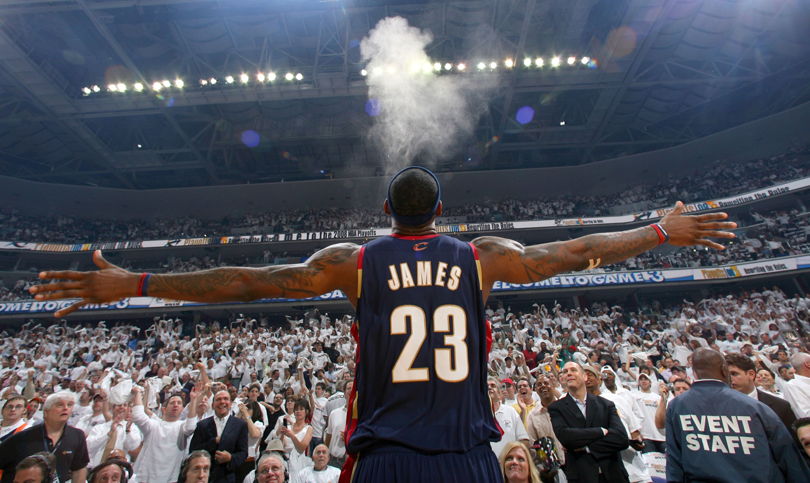

LeBron James "The King"

"I'm going to use all my tools, my God-given ability, and make the best life I can with it." - LeBron James
LeBron James' Career
Draft & Early Years
- 2003 NBA Draft: No. 1 overall pick by Cleveland Cavaliers.
- Rookie of the Year: 2004.
- Scoring Title: Youngest to win, 2007-2008 season.
- 2007 NBA Finals: First Finals appearance with Cavaliers.
Miami Heat Dynasty
- The Decision: Joined Miami Heat in 2010.
- NBA Championships: 2012, 2013.
- Finals MVP: 2012, 2013.
- MVP Awards: 2012, 2013.
Cleveland Cavaliers: The Return
- 2014: Announced return to Cavaliers.
- 2016 NBA Championship: Delivered Cleveland's first NBA title.
- Finals MVP: 2016.
Los Angeles Lakers Era
- 2018: Began new chapter with Lakers.
- 2020 NBA Championship: Led Lakers to victory in NBA Bubble.
- Finals MVP: 2020.
Historic Achievements
- All-Star Appearances: Numerous, showcasing sustained excellence.
- Record Breaker: First player with 30,000 points, 10,000 rebounds, and 10,000 assists.
- Philanthropy: Opened I PROMISE School in Akron, Ohio.
LeBron's Legacy
LeBron continues to find success in the NBA even at age 39. It is truly anyones guess as to when he will slow down and show signs of regression.
LeBron's son, Bronny James, is a future NBA prospect for this years or next years draft. LeBron is striving to play with Bronny in the NBA which would be one of if not his greatest accomplishment.
Through all the hate, and the disrespect, LeBron continues to perservere and has established himself as one of the GOATS.